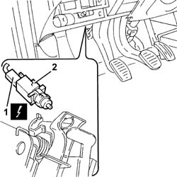

1060G38 brake pedal switch - r r
- Path
- Procedures > 10 ENGINE > 1060 DIESEL FUEL INJECTION > 1060G pressure pump electric control > 1060G38 brake pedal switch - r r
- Kind
- repair procedure (removal / refitting; the operation number is the code)
- Applies to
- all engines; all production periods
- Interactive page
- https://sloeber94.github.io/elrnDB-fDbl/en/#/2584495
Applies to: all engines; all production periods
 Removing
Removing
 Refitting
RefittingEnsure that the ignition key is in the stop OFF, then disconnect the battery negative terminal.
 | Name | Connector |
|---|---|---|
- | Battery | A1B |
1. Disconnect the electrical connection from the switch on the brake pedal.
| Name | Connector |
|---|---|---|
1 | Brake pedal switch | I30 |
2. Rotate and remove the switch on the brake pedal.

Applies to: all engines; all production periods
Refitting
RemovingMove the brake pedal to the end of its travel.
Fit the switch onto the bracket, rotating it about 60° clockwise until you hear a click, which means it has attached to the fitting on the bracket.
Release the brake pedal so the servobrake push rod is in rest position.
Move the pedal to the end of its travel to settle the switch in its housing.
Check there is clearance between the brake bracket and the switch.
Connect the electrical connection to the switch on the brake pedal.
Connect the battery terminal (-).